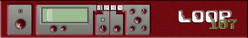

eleKtroniKa
help file
loop107 module
video
sampler and timed replay (buffer 4 secondes)

inputs/outputs
1 video in
1 video in 2 (trigger)
1 video out
usage
left part
on/off filling the buffer
fade the video input source
screen part
start replay position
len replay buffer
effect part (select 1/2/3/4)
1. replay with delay
(delay depand of the start position)
2. replay at the specified speed (speed / ping-pong)
3. replay each pixel time depand of the luma video input 2
4. time slice replay
copyright aestesis
2003
www.aestesis.org